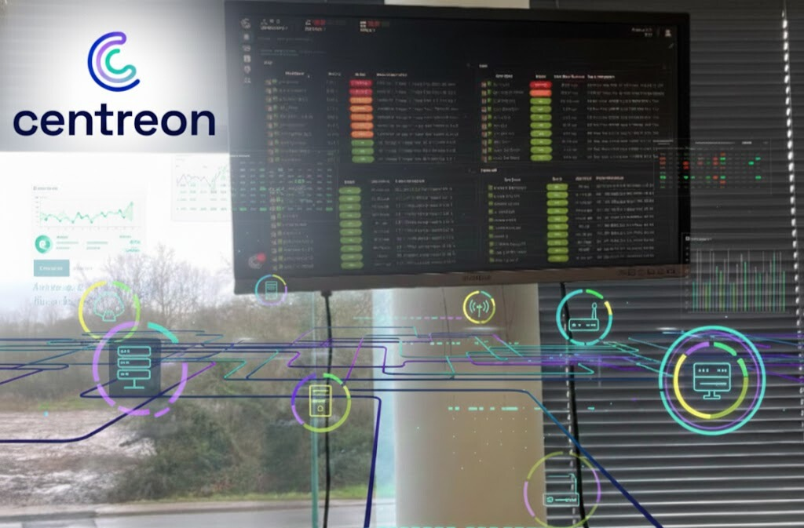

Infrastructure
Serveur de supervision Centreon
Installation et configuration complète d'un serveur Centreon pour superviser l'infrastructure IT de Terres de l'Ouest (serveurs, routeurs, switchs, Wi-Fi).